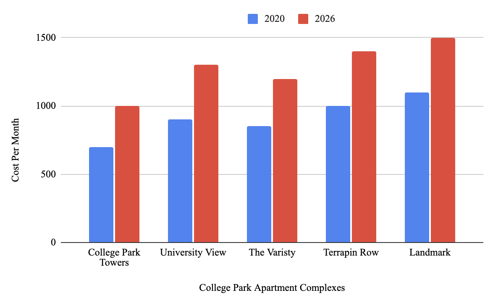
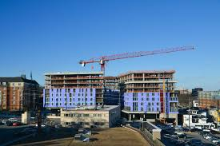

For many University of Maryland students, finding housing in College Park is no longer just a matter of convenience, but a financial challenge.
In popular apartment complexes close to campus, monthly rent has climbed to levels that rival large cities. One-bedroom units in properties like The Standard exceed $2,200, while four-bedroom units still cost more than $1,300 per person. Even older buildings near Route 1 that have long been considered as slightly more affordable options, have steadily increased in price as demand has surged.

Apartment complex price per month in College Park from 2020 to 2026 for a 4x4 unit
Despite the rapid construction of new apartment complexes throughout College Park in recent years, prices have continued to rise. The University of Maryland's growing enrollment and high demand for housing within walking distance of campus had allowed landlords to raise rates. Many newer buildings advertise rooftop pools, study lounges, gyms and security features that contribute to higher overall housing costs in the area.
For students who cannot afford these rates, cheaper alternatives exist. However, they’re often far from campus or are in areas that raise safety concerns. The more affordable listings are located deeper into College Park or in neighboring areas where students report fewer security measures and longer travel distances to campus. This creates a difficult balance between trying to save money on rent, but also sacrificing a student’s safety.
“For the 2026-27 school year, my rent was being increased and was expensive. My roommates and I figured we’d get more for that price elsewhere, so we looked at other living situations. However they preferred living in a house in Old Town, which I strongly opposed due to safety concerns,” junior criminology and criminal justice student Ava Dayanzadeh said.
Dayanzadeh talking about the 2024-25 leasing year to the 2025-26 leasing year at Aspen Heights in College Park
"I was not aware that our price for the rent would go up this much. I was not aware there would be a rent increase at all." - Dayanzadeh
“Now I have to commute for the next school year because of being unable to find an in between with price and safety,” Dayanzadeh said.
Rising rent has left many students without a middle ground. Apartments close to campus are expensive, while the affordable housing options come with safety risks and longer commutes.
“This year (2025-26) I paid $1,299 for a 4x4 at The Standard, but they upped the price on my lease to $1,429 for next year (2026-27),” junior marketing and business management student Jenna Vesper said.
“It’s hard, trying to figure out how I’m going to pay for it. I’m going to have to spend all summer working, even with the student loans I’ll get,” Vesper said.

New apartment buildings continue to rise throughout College Park as student housing demand increases.